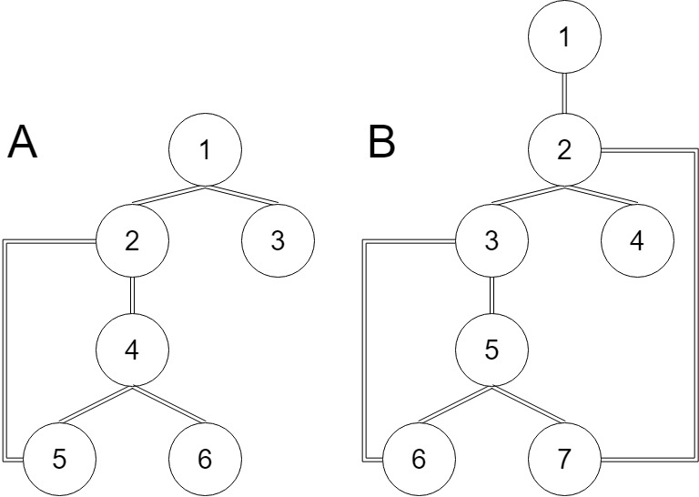

在一个有N个节点，M条边的有向图中，若删去一个点，以及所有与这个节点直接相连的边，会使该图不连通、或出现更多互不连通的子图（原图本身就不连通的情况），则称这个点为割点。
首先来设想一下，假如我们用DFS来遍历一张无向图连通图，保证每个点只被遍历到一次，然后将遍历时经过的每一个点，每一条边取出，组成一个新的联通图，显而易见：这张新图必然是一棵树。
我们称这棵树为DFS树，同时不难看出，由于遍历时所选的根节点不同，遍历的顺序不同，所以这颗DFS树并不唯一，不过这对于求割点而言影响不大，所以只要任意求出一颗DFS树就可以了
对于原图而言，我们将构成DFS树的边称为树边，不属于DFS树的边称为非树边
存在一个结论：对于每一条非树边，他只可能连接DFS树上某个节点和他的祖先，不可能连接两个分别位于不同子树上的节点，我们称这样连接DFS树上的某个节点与他的祖先的非树边为返祖边。
如图所示，只存在形如边I的返祖边，不存在形如边J的横跨边
分三种情况讨论:
1.若该节点是叶子节点，那么他一定不是割点
2.若该节点是根节点，那么若他的子树数量大于等于2，则他是割点，若他只有一颗子树，则他不是割点
3.若该节点既不是根节点也不是叶子节点，则若他的每一颗子树都中存在一条返祖到他的祖先节点（不包括）的返祖边，则他不是割点（如上图2中的2、5节点）反之他是割点
如图所示：图A中的1节点是一个割点，4节点是一个割点，图B中的1节点不是一个割点，5节点不是一个割点

1 #include<cstdio>
2 #include<cstring>
3 #include<iostream>
4 #include<algorithm>
5 using namespace std;
6 const int maxn = 100010;
7 const int maxm = 500005;
8 int n, m;
9 int tot, ans;
10 bool vis[maxn];
11 struct edge
12 {
13 int to;
14 int next;
15 bool t;//这条边是否是一条从子节点到父节点的边
16 bool flag;//是否是树边
17 }e[maxm];
18 struct node
19 {
20 int f;//该节点的父节点
21 int to;//该节点及其子树的所有节点的返祖边能够到达的最浅深度
22 int son;//该节点的子节点的个数
23 int deep;//该节点的深度
24 int head;
25 bool root;//是否是根节点
26 bool flag;//是否是割点
27 }p[maxn];
28 void add(int u, int v)
29 {
30 tot++;
31 e[tot].to = v;
32 e[tot].next = p[u].head;
33 p[u].head = tot;
34 }
35 void dfs(int u, int f)//u代表当前节点,f代表该节点的父节点
36 {
37 vis[u] = 1;
38 p[u].deep = p[f].deep + 1;//记录深度
39 p[u].to = p[u].deep;//初始设该节点及其子树所能够连接的最浅深度为该节点的深度
40 for (int i = p[u].head; i; i = e[i].next)//枚举该节点的所有子节点
41 {
42 int v = e[i].to;
43 if (!vis[v])
44 {
45 p[u].son++;//记录子节点的数量
46 p[v].f = u;//记录u的子节点的父节点为u
47 e[i].flag = 1;//这条边属于树边
48 dfs(v, u);
49 }
50 }
51 }
52 void init(int u)//处理每个节点的子树
53 {
54 for (int i = p[u].head; i; i = e[i].next)//更新每一个节点的子树所能抵达的最浅深度
55 {
56 int v = e[i].to;
57 if (e[i].flag && !e[i].t)
58 {
59 init(v);
60 p[u].to = min(p[u].to, p[v].to);
61 }
62 }
63 }
64 bool check(int u)
65 {
66 for (int i = p[u].head; i; i = e[i].next)
67 {
68 if (e[i].flag && !e[i].t)
69 {
70 int v = e[i].to;
71 if (!(p[v].to < p[u].deep))
72 return 0;
73 }
74 }
75 return 1;
76 }
77 void work()//判断每一个节点是否是割点
78 {
79 for (int u = 1; u <= n; u++)
80 {
81 if (u == 1)//u是根节点
82 {
83 if (p[u].son <= 1)
84 p[u].flag = 1;//不是割点
85 }
86 else if (p[u].son == 0)
87 p[u].flag = 1;
88 else
89 {
90 if (check(u))
91 p[u].flag = 1;
92 }
93 }
94 }
95 int main()
96 {
97 cin >> n >> m;
98 for (int i = 1; i <= m; i++)
99 {
100 int u, v;
101 cin >> u >> v;
102 add(u, v);
103 add(v, u);
104 }
105 dfs(1, 0);
106 //处理最小深度
107 //注意要特判从儿子节点到父节点的边（树边的一半），否则所有节点（都被认为可以到达根节点）
108 for (int u = 1; u <= n; u++)
109 {
110 for (int i = p[u].head; i; i = e[i].next)
111 {
112 int v = e[i].to;
113 if (!e[i].flag && v != p[u].f)//若这条边是树边且不是由儿子节点到父节点
114 {
115 p[u].to = min(p[u].to, p[v].deep);//更新u能抵达的最前深度
116 }
117 if (v == p[u].f)
118 e[i].t = 1;
119 }
120 }
121 init(1);
122 work();
123 for (int i = 1; i <= n; i++)
124 if (!p[i].flag)
125 ans++;
126 cout << ans << endl;
127 for (int i = 1; i <= n; i++)
128 if (!p[i].flag)
129 cout << i << " ";
130 return 0;
131 }不过上面的代码只能处理原图联通的情况，如果原图不连通则需要多跑几次（看成多个不同的连通图）
可以看出：以上用DFS树求割点的算法相当繁琐，相比之下，tarjan可以更加简单快捷的求出割点（并且不需要特判图的连通性）
1.对于根节点：若该节点的子节点的数量大于等于2则该节点是割点
2.对于其他节点：设该节点为u，设该节点的子节点为v，若存在low[v]>=dfn[u]则节点u为割点（类比DFS树第二种情况）
1 #include<stack>
2 #include<vector>
3 #include<string.h>
4 #include<iostream>
5 #include<algorithm>
6 using namespace std;
7 const int maxn = 100010;
8 int ans;
9 int n, m, id;
10 int dfn[maxn];
11 int low[maxn];
12 bool flag[maxn];//记录每一个点是否是割点
13 vector<int> e[maxn];//vector存图
14 void tarjan(int u, int f)//普通的tarjan
15 {
16 int child = 0;//记录该节点有几个子节点
17 low[u] = dfn[u] = ++id;
18 for (int i = 0; i < e[u].size(); i++)
19 {
20 int v = e[u][i];
21 if (!dfn[v])
22 {
23 tarjan(v, f);
24 low[u] = min(low[u], low[v]);
25 if (low[v] >= dfn[u] && u != f)
26 flag[u] = 1;
27 if (u == f)
28 child++;
29 }
30 low[u] = min(low[u], dfn[v]);
31 }
32 if (child >= 2 && u == f)
33 flag[u] = 1;
34 }
35 int main()
36 {
37 cin >> n >> m;
38 for (int i = 1; i <= m; i++)
39 {
40 int u, v;
41 cin >> u >> v;
42 e[u].push_back(v);
43 e[v].push_back(u);
44 }
45 for (int i = 1; i <= n; i++)//原图不一定联通，所以只要节点i尚未被遍历过
46 if (!dfn[i])//就要以i为根节点运行一次tarjan
47 tarjan(i, i);
48 for (int i = 1; i <= n; i++)
49 if (flag[i])
50 ans++;
51 cout << ans << endl;
52 for (int i = 1; i <= n; i++)
53 if (flag[i])
54 cout << i << " ";
55 return 0;
56 }--会宁狐狸